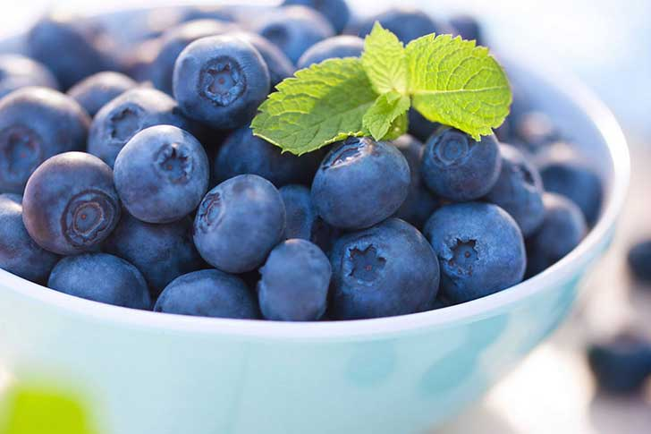
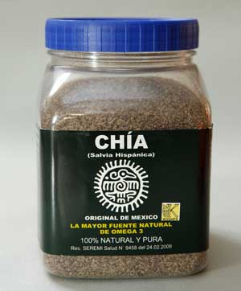
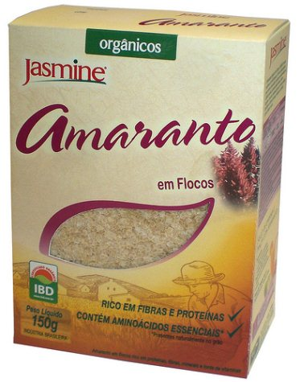
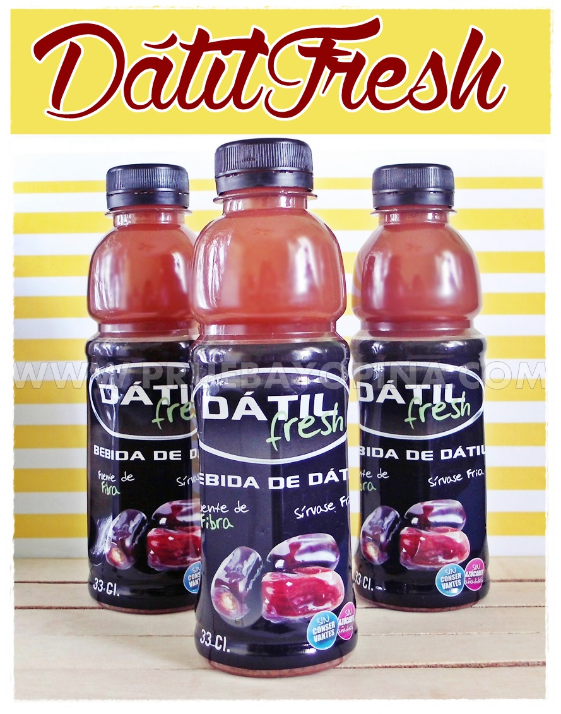
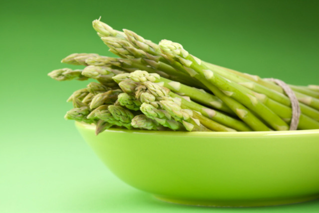

Welcome to our page
Here you will find everything you need for the agro-industry sector and everything related to the best products and services.
Some of our products
More about our variety in products
Blueberries are a small fruit of the forest of intense and exquisite flavor and excellent properties for our health. Raw, in juice or in capsules, its properties are very beneficial for our organism, mainly because they have a high antioxidant power.

If there is something that we can consider as "hand of saint" are the seeds of chia. This walnut-flavored product contains a wealth of vitamins and minerals that help you lose weight, control cravings and ultimately feel better.

Amaranths are a genus of herbs belonging to the Amaranthaceae family. It is a genus of plants widely distributed throughout most temperate and tropical regions.

The Datil, Is one of the best natural sources of potassium, essential mineral used by the human body to prevent muscle pain. It is also necessary to maintain the nervous system and balance the metabolism.

It is a perennial herbaceous plant of foliage very branched and feathery aspect. Its cultivation lasts a long time in the soil, of the order of 8 to 10 years, from the point of view of economic economic life. The asparagus plant consists of branched aerial stems and an underground part consisting of roots and buds.
